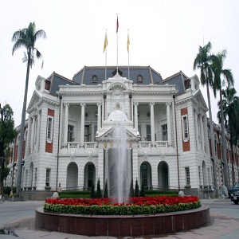
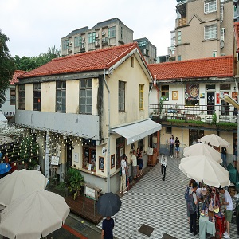
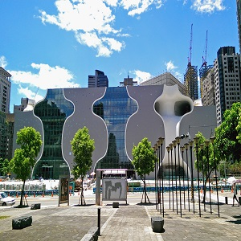

|  |
臺中州廳
臺中州廳是位於臺中市西區的國定古蹟，始建於臺灣日治時期1913年（分為五期，1934年全區廳舍完工[1]），先後成為日本殖民時期臺中州與民國時期省轄臺中市的行政中心。2006年11月17日被登錄為臺中市市定古蹟保護，2019年4月25日文化部公告再將其升格為國定古蹟。[2]由於該建築最初是日治時期的臺中州廳（「州廳」等同於中文語法的「州政府」）使用，因而沿用成為對其之稱呼。
|
|
審計新村
審計新村（現為審計新村368文創園區）為臺中市第3批臺灣省政府宿舍群之一，原為臺灣省政府審計處員工宿舍，1998年凍省後成為閒置空間而荒廢多年[2]。
|
 |
|  |
台中歌劇院
臺中國家歌劇院是位於臺灣臺中市西屯區七期重劃區裡的大型公有展演空間，為日本建築師伊東豊雄設計，佔地57,685平方公尺。歌劇院內擁有大劇院（2,007席）、中劇院（796席）、小劇場（200席）以及一個小型戶外劇場，另有餐飲空間與空中花園。
2001年10月全案歷經波折始獲得文建會核定補助一半的興建經費，並以戲劇表演為主，依照台中市政府的意願定位為台中市政府自行辦理之地方層級文化設施。[1]2005年的國際競圖由伊東豊雄獲得首獎。2009年12月由麗明營造主建，2015年獲得中華民國國家企業競爭力發展協會國家建築金質獎，其獨創的建築工法（曲牆建築工法和水幕防火設計）也獲得專利[2]。歌劇院於2014年11月23日由馬英九與胡志強落成剪綵後[3]，於2015年1月1日按照既定期程閉館，封館施作修改工程[4]，至2016年9月30日再次啟用開幕[5][6]。2018年獲得日本好設計獎Good Design Best 100[7]。
|